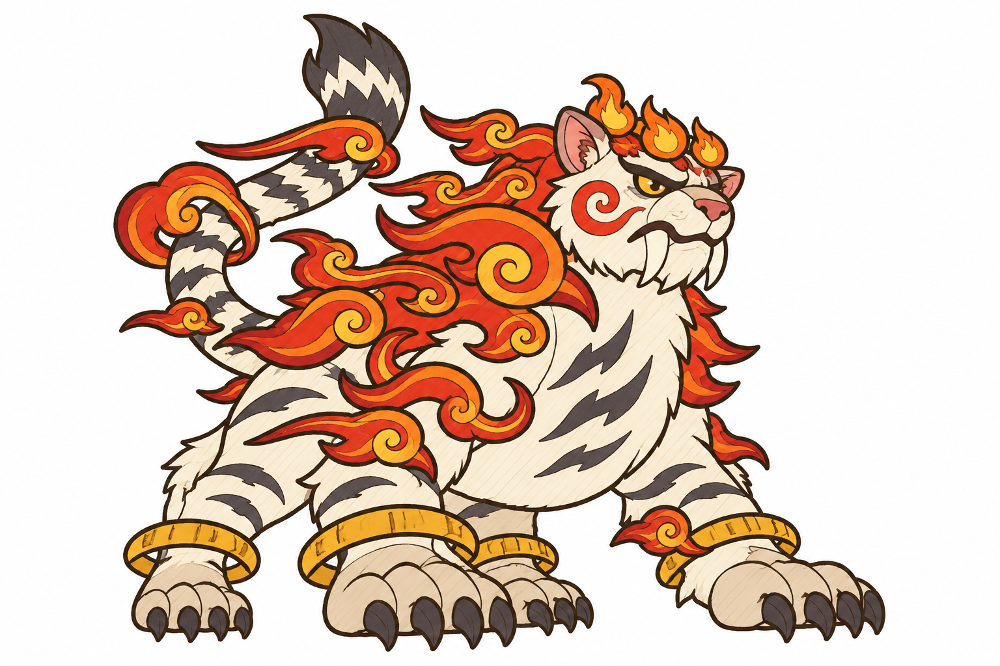

Hổ lửa (tướng thứ 9 đảo Hỏa, suất hoa_tinh): 3 hướng màu trên cùng bố cục rig
Đã bỏ sừng, chuông đồng ôm ngực, khuyên + chuông nhỏ dưới bụng. Mây bờm đổi thành mây lửa tô dải màu phẳng. Vòng cổ chân giữ.
Chuyển động thử (da gốc, chỉ để xem nhịp): hoa_ho_1/rig_goc/xem.html

A · bach: bạch hổ, vằn than, mây lửa đỏ son + cam + xoáy vàng, vòng vàng đồng (gần con gốc nhất)